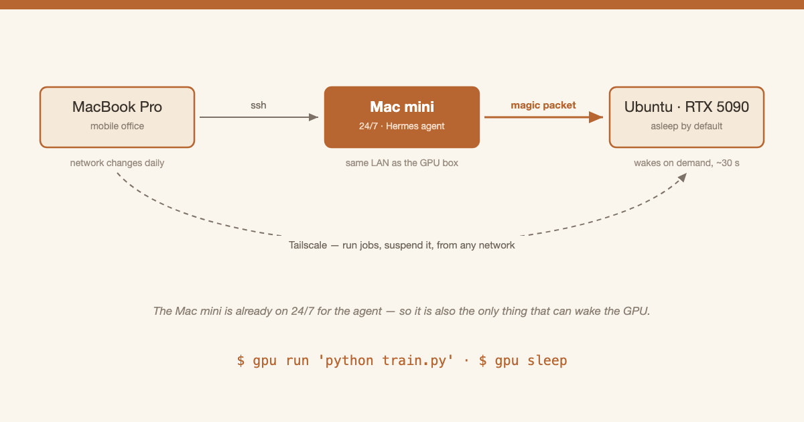

Tools
视觉生成从业者的三台机器
到处跑的笔记本、24 小时跑 agent 的 Mac mini，以及一台默认睡着、30 秒就能被叫醒的 5090。
三台机器，三种职责
我平时在三台机器之间干活。每一台的存在，都是因为另外两台干不了它的活。
MacBook Pro 是我真正办公的地方。它跟着我跑：家里、公司、咖啡馆、飞机上。它的网络一天要换好几次 —— 这意味着这套系统里其他任何东西，都不能假设自己知道它在哪儿。
Mac mini 从不睡觉。它 24 小时跑着我的 Hermes、Codex、Claude agents —— 早上 8 点的简报、晚上 10 点的总结、我睡着或者在飞机上时照常触发的任务。所以这台机器必须常开。这才是它真正的职责。
Ubuntu 工作站里装着一块 RTX 5090。我一周只用它几次。剩下的时间它应该睡着，而不是醒着空转。所以它默认睡眠，只在需要它的时候醒来。
它们怎么连起来
三台机器都在同一个 Tailscale 网络里，每台机器都有一个跟着自己走的固定地址，换 Wi-Fi 也不变。这把「笔记本到处跑」的问题彻底解决了：在咖啡馆连工作站，和坐在它旁边没有区别。
但 Tailscale 叫不醒一台睡着的机器 —— 睡着的机器压根不在网络上。唯一能叫醒它的是 magic packet：一个活在链路层的 Wake-on-LAN 广播包。它无法跨越互联网被路由，必须由一台已经待在工作站所在局域网里的机器，就地喊出来。
而 Mac mini 本来就待在那儿，本来就为了 agent 常开着。所以「叫醒 GPU」这件事几乎没有额外成本：它只是一台反正也不会睡的机器顺手多干的第二份活。这也正是为什么这套配置需要三台机器，而不是两台。

注意有哪些事情不经过 Mac mini：跑任务、看 GPU 占用、跑完让它睡回去 —— 这些都是笔记本经 Tailscale 直连工作站，在哪个网络都一样。只有唤醒需要中继。
怎么复刻
别自己手搓。点复制按钮，粘贴给任何一个能干活的 agent，然后说：「照这个给我搭一套。」
帮我在同一个 Tailscale 网络的三台机器上搭一套按需 GPU：
笔记本 到处跑，网络随时变
中继机 常开，和 GPU 机在同一个局域网
GPU 机 默认处于睡眠
唤醒： 笔记本 -> ssh 中继机 -> 在局域网广播 magic packet。
如果笔记本本来就在那个局域网里，就直接发，跳过中继。
轮询"ssh 能不能连上"，而不是轮询 VPN 说的"在线" ——
控制平面的状态会滞后好几分钟。
使用： 笔记本经 VPN 直连 GPU 机。睡着就先唤醒。
睡眠： 经 ssh 挂起，但如果还有 CUDA 进程在跑就拒绝执行。
每次挂起前重新武装网卡的唤醒源（它们撑不过一次重启），
并把非网卡的唤醒源全部解除武装 —— 否则 USB 控制器
会在挂起后几十秒内自己把机器弄醒。
兜底： RTC 闹钟（/sys/class/rtc/rtc0/wakealarm）不依赖网络
就能唤醒。做任何唤醒实验前先挂上它，失败的测试
就永远不会把机器睡死。
验证： 唤醒测试必须以一段"什么都不发"的对照相位开场，
并要求机器在这段时间里保持睡眠。否则，
一个乱发信号的唤醒源会替你把测试"通过"掉。最后得到的就是四条命令：
gpu status # 三台机器、GPU 占用、正在跑什么
gpu run 'python train.py' # 睡着就先自动唤醒
gpu sleep # 有 CUDA 进程在跑就拒绝
gpu wol-test # 带 RTC 安全网地重新验证唤醒链路BIOS 那三项
软件部分 agent 全能替你搞定；BIOS 里的开关得你自己拨。不过连进 BIOS 都不用守着开机画面抢按 Del —— 在 Ubuntu 里一条命令就行：
sudo systemctl reboot --firmware-setup它会告诉固件「下次开机直接进设置界面」，然后重启。
进去之后，这三项必须设对，否则机器要么叫不醒，要么睡不住：
Settings → Advanced → Power Management Setup
ErP Ready → Disabled
Settings → Advanced → Wake Up Event Setup
Wake Up Event By → BIOS
Resume By PCI-E Device → EnabledErP Ready 会切断 PCIe 和 M.2 插槽的待机供电 —— Wi-Fi 网卡插在 M.2 上，断了电自然发不出任何唤醒信号。Resume By PCI-E Device 决定这个信号能不能沿 PCIe 树往上传到根。Wake Up Event By 不设成 BIOS，后面那项会直接变灰。
剩下的，遇到问题问你的 agent 就好。
喜欢这篇？发到你的邮箱，稍后再读。